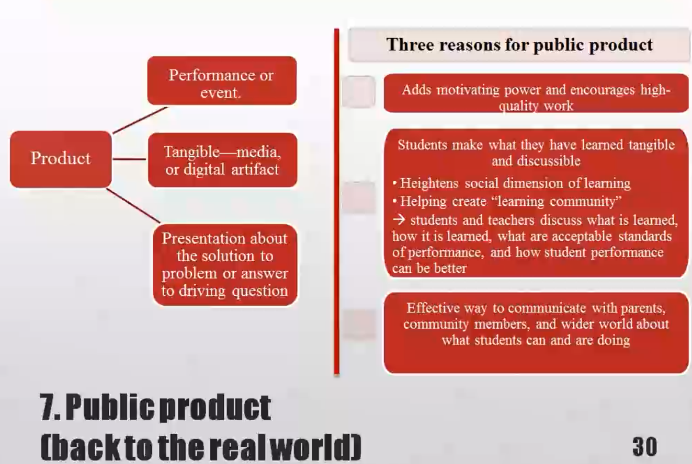
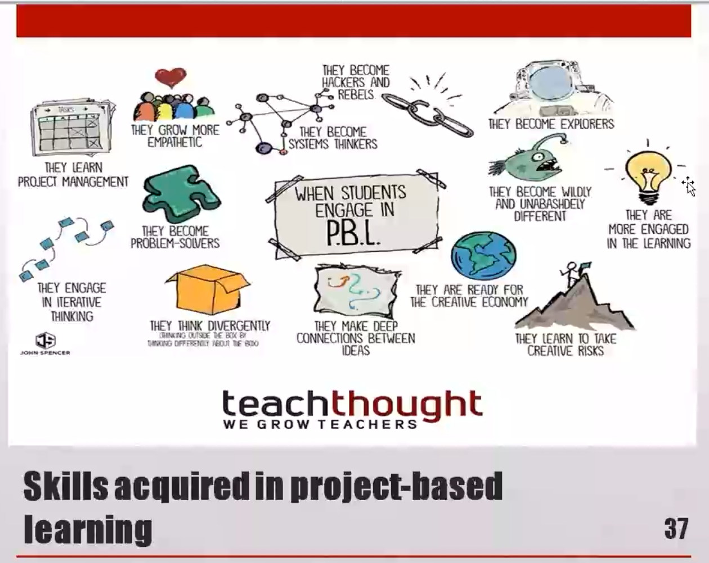
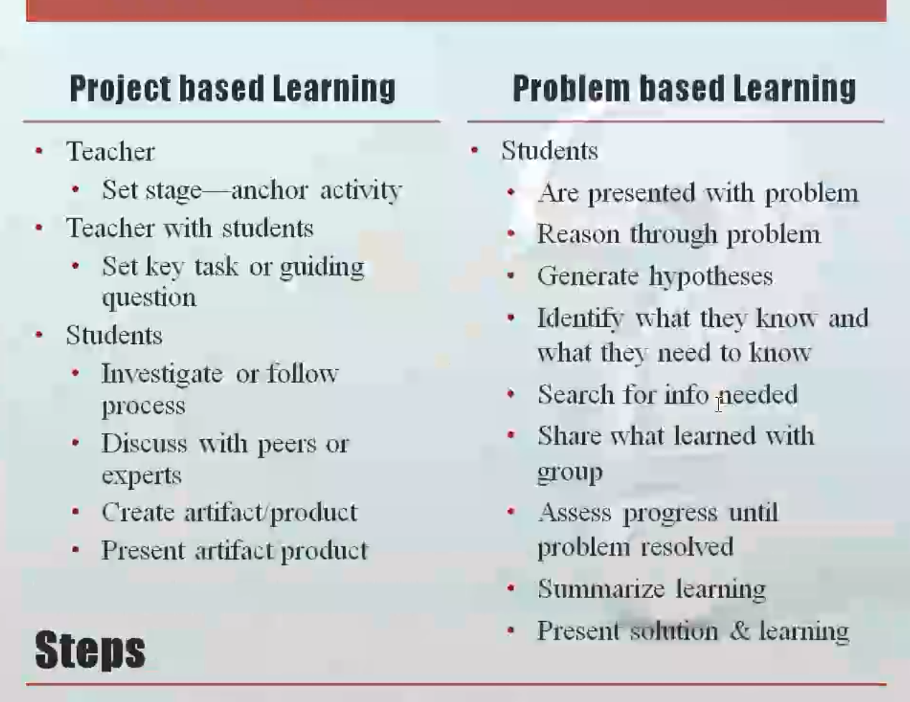

Second Class: PBL教学的常见形式¶
One learner-centered method: Proiect-based learning ¶
¶
\(\qquad\)Project Based Learning is a teaching method in which students gain knowledge and skills by working for an extended period of time to investigate and respond to anauthentic, engaging, and complex question, problem, or challenge.
Good teachers probe student thinking¶

Project and problem based learning¶
Students work on a project
- Over an extended period (from a week up to a semester)
- That engages them in
- Solving a real-world problem or
- Answering a complex question
Students demonstrate their knowledge and skills by creating a public product or presentation for real audience
Students Develop
- Deep content knowledge
- Critical thinking
- Collaboration
- Creativity
- Communication skills
Project based learning (PBL)¶
graph LR
A[Project based learning] --> B[More widely used in the US];
A --> C[Big differences between doing a project & rigorous project based learning];
A --> D[Vehicle for teaching important knowledge & skills];
A --> E[Requires critical thinking, problem solving, collaboration & communication];
A --> F[Allows students to create high-quality work by using higher-order thinking skills & learning to work as a team];
A --> G[Dessert Project: short, intellectually light vs. Main Course Project: key material];
"Dessert" project vs "main course" project¶
| DESSERT "DOING A PROJECT" | MAIN COURSE PROJECT BASED LEARNING |
|---|---|
| An add-on to the traditional instruction; at the end (or along side) of the unit | Instruction integrated into the project (The project is the unit!) |
| Follows direction of the teacher | Driven by student inquiry |
| Focused on product | Focused on product and process |
| Often unrelated to standards and skills | Aligned to academic standards and success skills |
| Can be completed alone and/or at home | Involves collaboration with students and in-class guidance from teacher |
| Remains within the school world | Has a real-world context and application |
| End result of project displayed in the classroom | Results of project shared beyond the classroom with a public audience |

1. Challenging problem or question (heart of project)¶
- Problem to investigate/solve, or question to explore/answer

- May be concrete or abstrac
- A problem or question that is meaningful to students
- So students need to know something to solve problem or answer a question that matters to them
- Should have more than one right answer
- Should challenge students without intimidating
- Central problem/question->open-ended, student-friendly "driving question" that focuses research:

- “How can we improve our school's recycling system, so we can reduce waste?” or
- “Should the U.S. have fought the Vietnam War?”
2. Sustained inquiry (to seek information or investigate)¶
- More active, in-depth than “looking something up"

- Inquiry process takes time
- Iterative
- When confronted with challenging problem or question, students ask questions, find resources to help answer them, then ask deeper questions
- Repeats until a satisfactory solution or answer is developed
- Can incorporate different information sources

- Traditional “research”
- Real-world, field-based interviews with experts, service providers and users
- Driven by student-generated questions throughout the project
3. Authenticity (“real-world" learning or task)¶


- Real-life problems or tasks
- Ill-structured versus well-struetured
- Engages students in same thinking process as experts/professionals
- Personally relevant, meaningful to learner
- Multiple, maybe contradictory, but valid perspectives
- Multiple “good” outcomes
- Social-problem and project
4. Student voice and choice (having a say creates ownership)¶
- Students should be able to make their voices hear

- To speak fireely in class discussions and teamwork
- To express themselves in products they create
- Not trying to sound like they think their teacher wants them to
- If students cannot use their judgment, project becomes an exercise in following directions
- Student input and (some) control over
- Questions they generate
- Resources to find answers
- Tasks and roles ofteam members
- Products they will create
5. Reflection¶

6. Critique and revision (to achieve high quality work) ¶
¶
- "Formative evaluation"
- Teachers giving feedback to students
- Students evaluating each other
- Students evaluating themselves and results of their learning
- Students should be taught to give and receive constructive peer feedback
- To improve projeet processes and produets
- Guided by rubrics, models, and formal feedback/critique protocols
- To improve projeet processes and produets
- Outside adults and experts can also contribute, with authentic, real-world point of view
7. Public product (back to the real world)¶

Collaboration¶

- Group work
- Peer reviews
- Collaborations with experts
- Negotiations
- Conflict resolution
- Giving and receiving help
- Building communication and management skills
Teaching practices: Project based learning¶

Teaching for proiect-based learning¶
- Align to Standards

- Teachers use standards to plan project and make sure it addresses key knowledge and understanding from subject areas
- Build Culture
- Teachers promote student independence and growth, open-ended inquiry, team spirit, and attention to quality
- Manage Activities
- Teachers work with students to organize tasks and schedules, set check points and deadlines, find and use resources, create products and make them public
- Scaffold Student Learning
- Teachers employ a variety of lessons, tools, and instructional strategies to support all students in reaching project goals
- Assess Student Learning

- Teachers use formative and summative assessments of knowledge, understanding, and msuccess skills, and include self and peer assessment of team and individual work
- Engage & Coach
- Teachers engage students in learning and work alongside them to identify when they need skill-buildig, redirection, encouragement, and celebration
Facilitation (roles of teacher)¶

- Modeling
- Coaching
- Scaffolding
- Providing resources
- Appropriate gaps in support ->Challenge zone: between comfort zone and panic zone
Skills acquired in project-based learning¶

Steps¶
